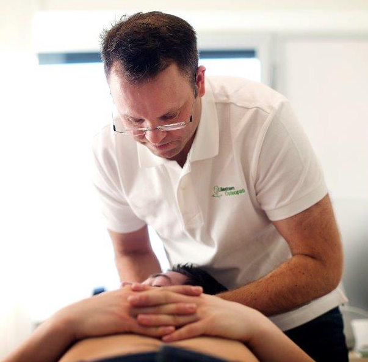
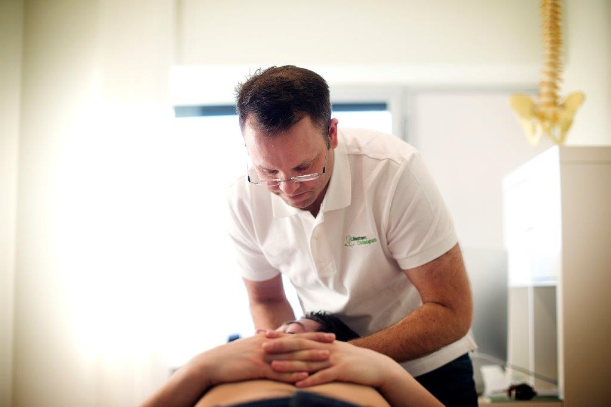

Velkommen til
Profesjonell osteopatisk behandling i hjertet av Lillestrøm. Vi hjelper deg med smerter, stivhet og nedsatt funksjon — med kroppen som helhet.
Om oss

Lillestrøm Osteopati tilbyr helhetlig osteopatisk behandling for hele familien. Som autorisert helsepersonell kombinerer vi grundig klinisk undersøkelse med skånsomme, manuelle teknikker tilpasset dine behov.
Osteopater har siden 1. mai 2022 vært autorisert helsepersonell i Norge, underlagt kravene fra Helsedirektoratet. Du trenger ingen henvisning fra lege — vi er primærkontakter i førstelinjetjenesten.
Vi har flere dyktige medarbeidere med stor kapasitet, og kan tilby time på kort varsel. Vi tar oss god tid til hver pasient, og fokuserer på å finne de underliggende årsakene til plagene dine — ikke bare symptomene.
Osteopati
En osteopat er autorisert helsepersonell med bred kunnskap om hvordan fysiske, psykiske og sosiale faktorer henger sammen og påvirker helsen din.
En osteopat skiller seg fra andre manuelle behandlere ved at osteopaten ser helheten i pasientens plager. Vi finner årsaken til symptomene — ikke bare behandler symptomene. Dette gjennomføres gjennom grundig undersøkelse og behandling som har som mål å finne funksjons- og bevegelsesforstyrrelser og å normalisere disse. Osteopaten behandler både akutte og kroniske lidelser.
Hos Lillestrøm Osteopati tilpasser vi behandlingen til dine behov. Vi kombinerer manuelle teknikker med veiledning og motivasjon — enten målet er å lindre akutte plager eller hjelpe deg til å mestre langvarige utfordringer.
Behandling av muskel- og skjelettsystemet med teknikker som leddmobilisering, muskeltøyning, muskelenergiteknikker (MET) og manipulasjon.
Skånsomme teknikker rettet mot indre organer og deres bindevevssystem, for å stimulere økt bevegelse, sirkulasjon og nervefunksjon.
Svært forsiktige teknikker rettet mot hodet, ryggmargen og nervesystemet — basert på de subtile bevegelsene mellom skallens knokler.
Osteopati passer for deg som ønsker en helhetlig tilnærming til helse og velvære. Vi behandler pasienter i alle aldre med smerter, skader eller sykdom i muskler og skjelett. Behandlingen tar utgangspunkt i sammenhengen mellom hverdagen, kroppen og plagene, og målet er å styrke pasientens evne til å hjelpe seg selv.
Vi behandler et bredt spekter av muskel- og leddsmerter — fra idrettsskader og belastningsskader til kroniske plager. Behandlingen kan både lindre akutte smerter og bidra til å forebygge fremtidige skader.
Behandlinger
Osteopati kan hjelpe med et bredt spekter av plager. Her er noen av de vanligste tilstandene vi behandler.
Akutte og langvarige smerter i rygg, nakke og korsrygg. Prolaps, isjias og stivhet.
Spenningshodepine, migrene og nakkerelatert hodepine som kan lindres med manuelle teknikker.
Forstrekninger, senebetennelser, overbelastningsskader og rehabilitering etter skade.
Skånsomme teknikker for kolikk, urolige barn, skjevheter og ammeproblemer.
Bekkensmerter, ryggsmerter og andre plager knyttet til svangerskap og fødsel.
Frozen shoulder, tennisalbue, karpaltunnelsyndrom og andre plager i overekstremitetene.
Artrose, løperkne, hælspore, plantarfasciitt og andre plager i underekstremitetene.
Generelt nedsatt bevegelighet, muskelstramhet og funksjonelle plager i hverdagen.
Funksjonelle mage-, tarm- og urinveisplager, sure oppstøt, halsbrann og fordøyelsesbesvær.
Tung pust og nedsatt pustefunksjon knyttet til stramhet i brystkasse og mellomgulv.
Belastningsskader og plager fra stillesittende arbeid, dårlig ergonomi og ensidig belastning.
Betennelser i seneskjeder, overbelastningsskader og repetitive belastningsplager.
Slik jobber vi
Vi starter med en grundig samtale om dine plager, sykehistorie og hva du ønsker hjelp med.
En klinisk undersøkelse for å kartlegge bevegelse, smerte og funksjon i de aktuelle områdene.
Skånsomme, manuelle teknikker tilpasset dine behov — med kroppen som helhet i fokus.
Du får øvelser og råd med hjem, og vi legger en plan for videre behandling ved behov.
Behandlere

Osteopat D.O. MNOF & Fysioterapeut
Thomas Sewell er autorisert fysioterapeut og osteopat D.O. MNOF, med lang klinisk erfaring innen utredning og behandling av muskel- og skjelettplager. Han jobber helhetlig med kroppen, med særlig interesse for sammenhengen mellom nakke, nervesystem og hodepineproblematikk.
Thomas har spesialkompetanse innen behandling av migrene og cervikogen hodepine, samt komplekse og sammensatte smertebilder i nakke, rygg og skulder. Han kombinerer osteopati, fysioterapi og kognitiv forståelse i møte med pasienten, med mål om varig bedring og økt funksjon i hverdagen.
Forsikring
Dersom du har helseforsikring privat eller via arbeidsgiver, kan det være at forsikringsselskapet dekker utgiftene til behandling. Undersøk med din arbeidsgiver og ditt forsikringsselskap. Vi kan i mange tilfeller fakturere direkte.
Har du et annet forsikringsselskap? Ta kontakt — vi hjelper deg gjerne med å finne ut om din forsikring dekker behandlingen.
Bedrift
Vi ønsker å tilrettelegge for å bedre helsen til de ansatte — gjennom grundig undersøkelse, behandling og forebyggende tiltak tilpasset hver enkelt.
Gjennom tester, samtaler og kartlegging av bedriften kommer vi fram til en hensiktsmessig og kostnadseffektiv løsning. Vi kan forhindre at ansatte med plager forsvinner ut i sykemelding, forebygge overbelastning og skader hos friske arbeidstakere, og hjelpe allerede sykemeldte tilbake i arbeid.
Vi kommer til bedriften med faste intervaller og behandler de ansatte på arbeidsplassen. Vi har med eget utstyr og trenger kun et rom.
Bedriften dekker deler eller hele behandlingssummen. Vi sender faktura ved månedsslutt, eller etter avtale. Eventuell egenandel kan trekkes av lønnen.
Forebyggende behandling som foregår hos bedriften gir skattefradrag. Den ansatte skal ikke belastes med fordelsbeskatning.
Kontakt Lillestrøm Osteopati Bedrift for tilbud. Vi kommer gjerne ut til bedriften for en presentasjon om hva vi kan tilby.
Kontakt oss for tilbudPriser
Inkluderer samtale, undersøkelse og behandling (ca. 60 min)
Pris kommer
Behandling for eksisterende pasienter (ca. 45 min)
Pris kommer
Tilpasset konsultasjon og behandling for barn
Pris kommer
Osteopati er ikke dekket av Helfo. Behandling betales privat eller via behandlingsforsikring.
Avbestilling: Vi ber om at avbestilling skjer senest 24 timer før avtalt time.
Kontakt
Lillestrøm sentrum
Lillestrøm, Norge
Mandag – Fredag: 08:00 – 18:00
Lørdag: Etter avtale
Søndag: Stengt
Spørsmål og svar
Osteopati passer for deg som ønsker en helhetlig tilnærming til helse og velvære. Vi behandler pasienter i alle aldre med smerter, skader eller sykdom i muskler og skjelett — fra idrettsskader og belastningsskader til kroniske plager. Behandlingen kan både lindre akutte smerter og bidra til å forebygge fremtidige skader. Visste du at behandling hos osteopat dekkes av de fleste helseforsikringer?
Osteopater er autoriserte helsepersonell og medlemmer av Norsk Osteopatforbund. Utdanningen til osteopat er fireårig, med en treårig bachelor og ett års videreutdanning. I Norge er Høyskolen Kristiania den eneste skolen som tilbyr dette studiet. Flere av våre behandlere har også utdanning fra den anerkjente ESO — European School of Osteopathy i Kent, England.
Ved behov kan osteopaten henvise deg til fastlegen med en beskrivelse. Henvisning til spesialist eller bildediagnostikk er mulig privat, altså uten Helfo-finansiering. For offentlige henvisninger til spesialist eller bildediagnostikk må du gå via fastlege, manuellterapeut eller kiropraktor.
Nei, osteopater kan ikke sykmelde. Vi samarbeider likevel tett med fastleger og kommuniserer via Norsk Helsenett. Ved mistanke om annen sykdom kan vi be din fastlege om å henvise til bildediagnostikk som MR eller røntgen.
Nei, du trenger ingen henvisning. Osteopater er primærkontakter i førstelinjetjenesten, og du kan bestille time direkte hos oss.
Dersom du har helseforsikring privat eller via arbeidsgiver, kan det være at forsikringsselskapet dekker utgiftene til behandling. Undersøk med din arbeidsgiver og ditt forsikringsselskap. Osteopati er ikke dekket av Helfo — behandling betales privat eller via behandlingsforsikring. Vi kan i mange tilfeller fakturere forsikringsselskapet direkte.
Undersøkelsen leder til en osteopatisk diagnose som viser oss hvor i kroppen de viktigste dysfunksjonene er. Denne diagnosen avgjør behandlingen, som består av manuelle teknikker — mobilisering, leddmanipulasjon, avspenning, triggerpunktbehandling og muskeltøyninger. Behandlingen har en trygg og skånsom tilnærming, og hver pasient får spesielt tilrettelagt behandling ut fra sine plager.
Vi ber om at avbestilling skjer senest 24 timer før avtalt time.
Bestill time i dag — ingen henvisning nødvendig. Vi tar oss tid til å finne de underliggende årsakene til plagene dine.
Autorisert helsepersonell — underlagt Helsedirektoratets krav
Vi har mottatt meldingen din og vil svare deg så snart som mulig — vanligvis innen en virkedag.
Tilbake til forsiden